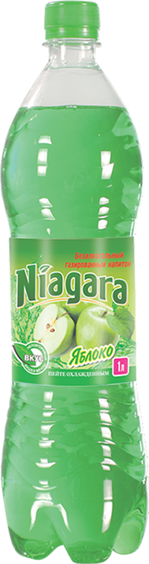
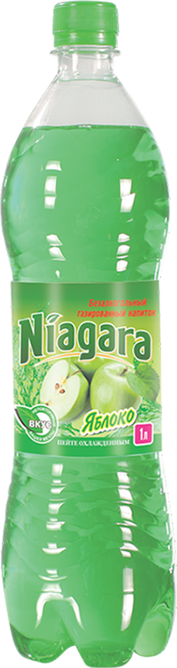

Niagara
Salqin Ichimligi
 
 Turli meva ta‘mli...
Yorqin ta’mli Niagara salqin ichimliklari - turli meva ta’mlari sevuvchilar uchun. Dyushes, Olma, Olcha, Apelsin, va noodatiy Limon-Laym, Qulupnay, Ananas ta’mlarini tatib ko‘ring. Har qanday bayram, kayfiyat va holatlarda sizga yuqori kayfiyat ulashish uchun yaratilgan. O‘zingizga qulay hajmlarda qadoqlangan.